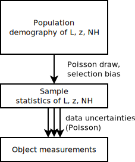

Calibrated Bayes for X-ray spectra
johannes.buchner.acad [ät] gmx.com
http://arxiv.org/abs/1402.0004
About me
- models with 3-30 parameters, numerical
- Author of
- APEMoST (PTMCMC)
- PyMultiNest
- BXA (+50 other projects on github)
- Bayesian inference since 7 years
- MCMC/nested sampling techniques
- before: optical/radio, now: X-ray AGN (spectra, LF)
Overview
- Introduction to model selection (graphically)
- Methods for computing model selection
- Calibrated Bayes, application to X-ray spectra
- Current project: field inference
Bayes theorem
Is this interpretation allowed?
The likelihood function $p(D|\theta) = \cal{L}$
-
A process has N outcomes
- propensity/tendency for the process to produce a spectific outcome D?
- In the long run: frequency of D occurring
- Example: Gaussian process $$ \cal{L} \sim \exp\left\{ -\frac{1}{2}\left(\frac{d-\mu}{\sigma}\right)^{2}\right\} $$
The problem with likelihoods
- Cat
- Meows
- walks around on stairs
- walks around on floor
- Poltergeist
- makes squeaky noise
- Can construct a likelihood that produces always and only the observed data $\cal{L} = 1$
- But process not very probable - combine
- Interpretation of the data in context of other information (Discussion & Results)
Data: squeaky noise
BI as update rule
$ p(\theta|D) \sim p(\theta) \prod_{i}\exp\left\{ -\frac{1}{2}\left(\frac{d_{i}-\mu}{\sigma}\right)^{2}\right\} $- More data: add terms to the right
- First term: absence of data, starting point for update rule
Discrete introduction to BI:
- evaluate likelihood at every point
- how prone is the process to produce the observed data
- Compute relative importance: $$\cal{L} / \overline{{\cal L}}$$
- Grab those that
make up 90% of $\sum{\cal L}$ - $Z = \overline{{\cal L}}$ "evidence" is average likelihood
How to place grid points
 Result is dependent on placement
Result is dependent on placement
- Equal spacing in $\theta_1$ or in $\log \theta_1$.
- Choice of spacing is called "prior"
- coin = investment in computing there, put coins where it is worthwhile
Two models
- Compare two parameter spaces by $$\left.\sum{{\cal L}}\right|_{M1} / \left.\sum{{\cal L}}\right|_{M2} $$
- How many coins to put in M1, M2?
- model prior
Parameter Estimation vs. Model Comparison
- prior is measure, rule of averaging, deformation of space to "natural variables", investment in/weighting of sub-regions
- most common priors: uniform, log-uniform.
- model priors are relative size of spaces
- Remove coins contributing less than 10%.
- Under Bayesian inference, same problem:
- comparing bags of hypotheses
Prior transforms
where is the cumulative distribution of :
- transformation through inverse of CDF
- compresses unimportant regions
- "native units":
Exploration
- for dim≤3, grids are best
- otherwise,
- sparse grids or
- randomized methods (MCMC, nested sampling)
MCMC Exploration
- Missing ingredient: transition kernel
- tune to the problems
- Fraction of visits ~ converges to ~ probability of hypothesis
- Where does chain spend 90% of its visits
Comparing models
- With MCMC: RJMCMC
- Does not work: too difficult to make a good transition kernel
- How else? Just compute that integral for every space.
MCMC problems
- Need transition kernel that can overcome separated maxima in likelihood
- Solutions: PTMCMC
- high-dim: acceptance can be very small, good region is tiny volume
- Solutions: HMCMC
nested sampling idea
- MCMC: only consider likelihood ratios. Integration by vertical slices
- nested sampling: compute geometric size at various likelihood thresholds
- orthogonal, unique re-ordering of volume by likelihood

nested sampling algorithm
- Start with volume 1, draw randomly uniformly 200 points
- remove one, volume shrinks by 1/200.
- draw a new one excluding the removed volume
- Unique ordering of space required: via likelihood
draw a new uniformly random point, with higher likelihood
(the crux of nested sampling) - Scanning up vertically, done at some point
- converges (flat at highest likelihood)

Missing ingredients
- Insert tuned transition kernel into MCMC
- Insert constrained drawing algorithm into nested sampling
- General solutions: MultiNest, MCMC, HMCMC, Galilean, RadFriends
- Buchner (2014, submitted) - Statistical tests for nested sampling and the RadFriends algorithm
RadFriends / MultiNest
- Use existing points to guess contour
- Expand contour a little bit
- Draw uniformly from contour
- Reject points below likelihood threshold
- RadFriends: Compute distance at which every point has a neighbor. Bootstrap (Leave out) for safety.
- MultiNest clusters and uses ellipses
RadFriends / MultiNest
What to do with Z
- Z1, Z2 $$ \frac{p(M1|D)}{p(M2|D)}=\frac{Z1\cdot p(M1)}{Z2\cdot p(M2)} $$ $$ \frac{p(M_{1}|D)}{\sum p(M_{i}|D)}=\frac{Z_{1}\cdot p(M_{i})}{\sum_{i}Z_{i}\cdot p(M_{i})} $$
- model priors: leave to reader or motivated by theory
- Discard highly improbable model or marginalise
- Does $\frac{p(M1|D)}{p(M2|D)} = 3/1$ mean M2 is correct in a quarter of the cases?
Method summary
Problems with
- Multiple maxima
- low information state
- peculiar shapes in likelihood
- numerical likelihood
- Parameter estimation:
- low-dim:
Nested sampling - MultiNest - high-dim: HMCMC with multiple chains - Stan
- low-dim:
- Model selection:
- low-dim:
Nested sampling - MultiNest - high-dim: fund me! NS + some MCMC variants -- experimental work needed!
- low-dim:
Alternative methods for model selection
- single
- prior-independent
- Gaussian-shaped maximum
- inside the parameter space
- $\Delta \left(- 2\log\cal{L}\right) \sim \chi^2$ distributed
- LaPlace Approximation, Wilks' theorem, F-test, LR-test, BIC, AIC
- Unification: Watanabe (2014), WBIC/WAIC.
- "Wilks's theorem should not apply — YET it works!!"
- Narrow field of validity. General solution is computing Z.
As $n\rightarrow\infty$, information well constrained in a
II: Calibrated Bayes
- BI is theoretically motivated. Is it any good?
- Any application has approximations and assumptions in
- model, distributions, data extraction, prior
- Motivation for Bayes factor/level to cut at (free parameter?)
Calibrated Bayes
Questions of Frequentists/Likelihoodists to their method:- How efficient is the method at ruling out?
- What in the data drives the result (strength)?
- Is the method robust against changes in the data, prior choice
- How often does the method give the wrong result?
- How does the method behave when the model is wrong
- due to outliers, systematic effects from data reduction
- How does failure look like?
Application: X-ray spectra

- Buchner et al. (2014) - X-ray spectral modeling of the AGN obscuring region in the CDFS: Bayesian model selection
Processes in AGN

Obscurer models considered

Spectra: 179

Spectra: 179

(Answering: What drives the result?)
Efficiency of model comparison
true model $\rightarrow$ assigned model
- A $\rightarrow$ A
- B $\rightarrow$ B
- A $\rightarrow$ B
- B $\rightarrow$ A
- minimize error frequency (3 + 4, red)
- Frequentist analysis?
- vary data, analyse method: frequentist $D|H$
- vary hypotheses, analyse data: Bayesian $H|D$
Comparison $\hat{L}$ vs. $Z$
 red: wabs $\rightarrow$ powerlaw
red: wabs $\rightarrow$ powerlaw
red: powerlaw $\rightarrow$ wabs
Appendix 2, Buchner et al. (2014)
Model for all AGN
- Combine data sets by multiplicating Z $$\frac{p(M1|D,D')}{p(M2|D,D')}=\frac{Z1\cdot Z1'\cdot p(M1)}{Z2\cdot Z2'\cdot p(M2)}$$
- Is a single object / data set dominant?
- Bootstrap multiplication
- M1 is preferred in 100% of bootstraps -- not a peculiar sample. (Addressing: Is the method robust?)
Robustness
- BI is not robust (technical term)
- because likelihood is not robust
"outliers" are taken seriously, all information is used (sensitive).
Behaviour when model is wrong


posterior becomes very narrow and sensitive
Behaviour when model is wrong
- flying blind with BI.
- likelihood, Z not informative for goodness of fit
- need outside help:
- visualisation, sanity checks, predictive posterior, ...
- posterior goes to borders of the parameter space, unphysical values
- posterior becomes very narrow
Fixes
- Arrogant Bayesian answer: Just include the missing feature in the model
- Bayesian answer 2: Add systematic uncertainty to each data point
- general approach to make BI robust, but high-dim
- Statisticians answer: visualise
- Astronomers answer: simulations
- Remove potentially contaminated data (where model does not apply)
Model discovery

- BI works only in a closed system (relative probabilities).
- AI: closed world assumption. Everything else does not exist
- can not break out of scheme. Humans can; creativity & expert knowledge required.
- Deductive reasoning vs Inductive reasoning
Summary: Calibrated Bayes
Questions to the method (including assumptions/approximations):
- How efficient is the method at ruling out?
- What in the data drives the result (strength)?
- Is the method robust against changes in the data, prior choice
- How often does the method give the wrong result?
- How does the method behave when the model is wrong?
- due to outliers, systematic effects from data reduction
- How does failure look like?
- Go beyond the current model and discover a new model?
If you answer these questions, you are doing calibrated Bayes.
Using non-Bayesian methods (simulations, visualisation, p-values).
Current project: AGN LF
- 
- number density distribution $f(L_X, z, N_H)$
- selection function known, but not analytic
- probability clouds -- visualisation (binning) difficult
Model: Smooth 3d field

- value constant, slope constant
- a way to encode a smoothness prior
- PE with HMCMC (Stan), 1000 dim.